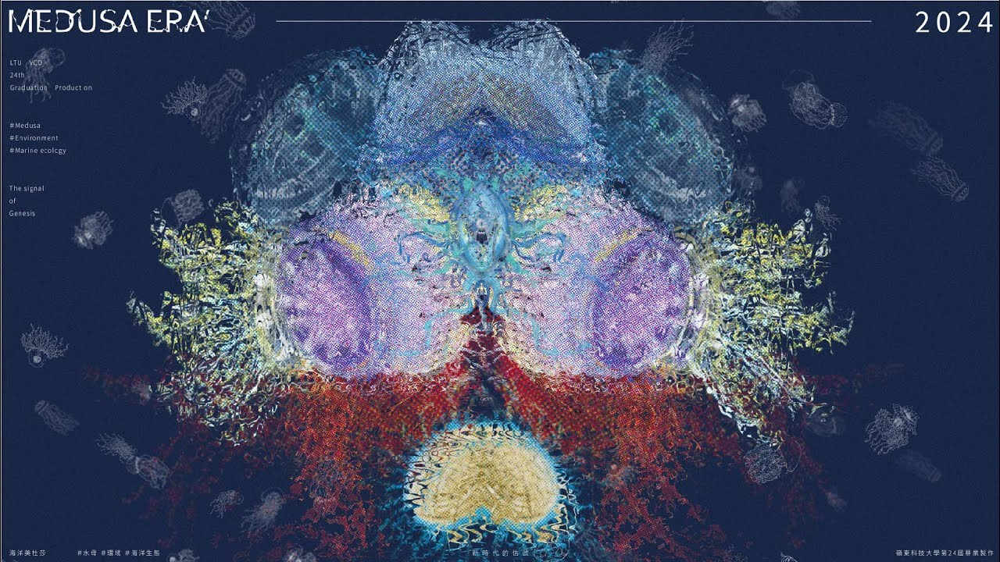

海洋美杜莎
海洋美杜莎
透過了解水母在海洋生態中的角色，認識到環境變遷之下所引發的水母爆發事件。盤點出世界上34種資料充足的水母種類，將水母自身流體的特性作為插畫風格，搭配科普知識作為書籍來認識各種水母的特徵。再透過創意的重組混合做為視覺呈現，探討水母氾濫對環境所造成的影響。
By understanding the role of jellyfish in marine ecology, we recognize the jellyfish blooms triggered by environmental changes. We inventory 34 species of jellyfish worldwide with sufficient data, using the fluid characteristics of jellyfish themselves as the illustration style, paired with popular science knowledge in books to understand the characteristics of various jellyfish species. Through creative recombination and blending for visual presentation, we explore the impact of jellyfish blooms on the environment.
